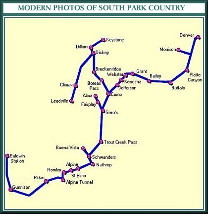

|
The Narrow Gauge Circle is written, maintained,and hosted by: Mark L. Evans Send Comments to:Mark L. Evans All original materials, text, and digital images Copyright © 1996-2014 Mark L. Evans. All rights reserved. Imitation is said to be the "sincerest" form of flattery.....Please don't flatter us without permission. |